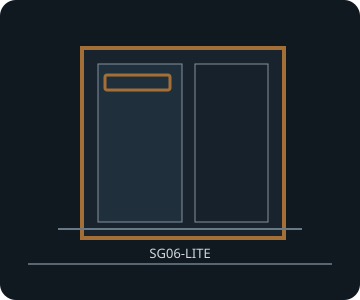

[ SUGO SG06-LITE // COMPACT SFX CUBE ]
SilverStone SUGO SG06-LITE
220 × 177 × 286 mm (W × H × D), about 11.1 L; Mini-ITX/Mini-DTX case with SFX PSU and a slim optical-drive option.

FITMENT CAVEAT: This record describes the named model only. Published maxima can depend on revision, brackets, fan/radiator position, PSU cable routing and drive configuration; verify the exact manual and parts before purchase or assembly.
Specifications & fit
| Exact model | SilverStone SUGO SG06-LITE |
|---|---|
| Motherboard sizes | Mini-ITX (170 × 170 mm) and Mini-DTX (203 × 170 mm); two expansion slots. |
| PSU type and fit | SFX only; the LITE model does not include a power supply. Do not substitute an ATX or TFX unit. |
| GPU length and thickness | Up to 254 mm long × 129 mm wide/high; two-slot card envelope. SilverStone does not publish an independent thickness in millimetres, so verify the card's slot count and connector position. |
| CPU cooler height | Maximum CPU cooler height 82 mm. Check side overhang against the motherboard, fan guard and memory modules. |
| Radiator and fan options | One 120 mm front intake fan position (120 mm fan supplied on the standard configuration); ventilated top and side panels. No radiator mounting is specified for the SG06-LITE. |
| Storage clearances | One internal 3.5-inch position and one 2.5-inch position, plus one external 12.7 mm slim optical-drive bay. The GPU can obstruct straight SATA plugs; SilverStone recommends right-angle SATA routing for some combinations. |
| Compatibility notes | The maximum 254 mm GPU, slim optical-drive bracket and internal drive positions occupy the same front volume. Check GPU length, SATA connector orientation and the exact slim-drive tray before assembly. |
Compatibility & preservation notes
The maximum 254 mm GPU, slim optical-drive bracket and internal drive positions occupy the same front volume. Check GPU length, SATA connector orientation and the exact slim-drive tray before assembly.
- Record the case model/SKU, revision, included riser, brackets and manual version before changing hardware.
- Measure the actual GPU shroud, power connectors, cooler, radiator/fan stack and cable bend radii; do not assume listed maxima can coexist.
- Keep original drive trays, standoffs, fasteners, fan brackets and panel hardware with the enclosure.
Manufacturer sources
- SilverStone — SUGO SG06-LITE product specificationsManufacturer model-specific limits and LITE bundle details.
- SilverStone — SG06-LITE manual (PDF)Manufacturer installation diagrams, slim ODD and card clearance guidance.
Sources are manufacturer product documentation and the model-specific manual; consult the matching revision for assembly dimensions.